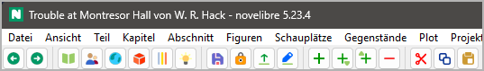

Die Werkzeugleiste
Die Werkzeugleiste enthält Schaltflächen für häufig benutzte Vorgänge im vorgeschlagenen Arbeitsablauf.

 im Browserverlauf zurückgehen.
Dasselbe wie
im Browserverlauf zurückgehen.
Dasselbe wie Alt-Links.
 im Browserverlauf vorangehen.
Dasselbe wir
im Browserverlauf vorangehen.
Dasselbe wir Alt-Rechts.
 Gehe zum „Buch“-Zweig und klappe ihn auf.
Dasselbe wie Ansicht > Buch anzeigen.
Gehe zum „Buch“-Zweig und klappe ihn auf.
Dasselbe wie Ansicht > Buch anzeigen.
 Gehe zum „Figuren“-Zweig und klappe ihn auf.
Dasselbe wie Ansicht > Figuren anzeigen.
Gehe zum „Figuren“-Zweig und klappe ihn auf.
Dasselbe wie Ansicht > Figuren anzeigen.
Gehe zum „Schauplätze“-Zweig und klappe ihn auf. Dasselbe wie Ansicht > Schauplätze anzeigen.
Gehe zum „Gegenstände“-Zweig und klappe ihn auf. Dasselbe wie Ansicht > Gegenstände anzeigen.
Gehe zum „Plotlinien“-Zweig und klappe ihn auf. Dasselbe wie Ansicht > Plotlinien anzeigen.
 Gehe zum „Projektnotizen“-Zweig und klappe ihn auf.
Dasselbe wie Ansicht > Projektnotizen anzeigen.
Gehe zum „Projektnotizen“-Zweig und klappe ihn auf.
Dasselbe wie Ansicht > Projektnotizen anzeigen.
Speichere das Projekt. Dasselbe wie Datei > Speichern oder Strg-S.
 Ändere den Zustand der Projektsperre.
Ändere den Zustand der Projektsperre.
 Importiere das aktuelle Manuskript.
Entspricht der Auswahl des Manuskripts unter Importieren.
Importiere das aktuelle Manuskript.
Entspricht der Auswahl des Manuskripts unter Importieren.
 Exportiere das Manuskript zum Bearbeiten.
Dasselbe wie Exportieren > Manuskript zum Bearbeiten,
das Dokument wird jedoch ohne Rückfrage geöffnet.
Exportiere das Manuskript zum Bearbeiten.
Dasselbe wie Exportieren > Manuskript zum Bearbeiten,
das Dokument wird jedoch ohne Rückfrage geöffnet.
 Element hinzufügen.
Dasselbe wie
Element hinzufügen.
Dasselbe wie Strg-N.
Kindelement hinzufügen.
Dasselbe wie Strg-Alt-N.
 Element auf der Ebene der Eltern hinzufügen.
Dasselbe wie
Element auf der Ebene der Eltern hinzufügen.
Dasselbe wie Strg-Alt-Umschalt-N.
 Ausgewählte Elemente löschen.
Dasselbe wie
Ausgewählte Elemente löschen.
Dasselbe wie Entf.
 Das ausgewählte Element aus dem Baum in die Zwischenablage verschieben.
Dasselbe wie
Das ausgewählte Element aus dem Baum in die Zwischenablage verschieben.
Dasselbe wie Strg-X.
 Das ausgewählte Element in die Zwischenablage kopieren.
Dasselbe wie
Das ausgewählte Element in die Zwischenablage kopieren.
Dasselbe wie Strg-C.
 Das Element aus der Zwischenablage in den Baum einfügen.
Dasselbe wie
Das Element aus der Zwischenablage in den Baum einfügen.
Dasselbe wie Strg-V.
Sie können die folgenden Baumelemente über die Zwischenablage kopieren und einfügen:
Teile und Kapitel,
Abschnitte,
Stadien,
Plotlinien,
Plotpunkte,
Figuren,
Schauplätze,
Gegenstände,
Projektnotizen.
Hinweis
Falls mehrere Elemente markiert sind, wird nur das erste kopiert. Hat das Element jedoch „Kinder“, werden diese auch kopiert und eingefügt.
Achtung
Beziehungen werden beim Kopieren oder Verschieben in die Zwischenablage nicht mitgenommen. Das gilt auch für die Abschnitts-Perspektive und für Plotlinien/Plotpunkte.
 Elemente mit einem bestimmten Schlagwort hervorheben.
Das öffnet einen Auswahldialog für das Schlagwort.
Dasselbe wie Ansicht > Elemente mit Schlagwort hervorheben.
Elemente mit einem bestimmten Schlagwort hervorheben.
Das öffnet einen Auswahldialog für das Schlagwort.
Dasselbe wie Ansicht > Elemente mit Schlagwort hervorheben.
 Hervorhebung von Baumelementen zurücksetzen.
Dasselbe wie Ansicht > Hervorhebung zurücksetzen.
Hervorhebung von Baumelementen zurücksetzen.
Dasselbe wie Ansicht > Hervorhebung zurücksetzen.
Während Baumelemente hervorgehoben sind, wird das Kriterium rechts von der Rücksetz-Schaltfläche angezeigt.
 Textbetrachter anzeigen/verbergen.
Dasselbe wie Ansicht > Textbetrachter anzeigen/verbergen oder
Textbetrachter anzeigen/verbergen.
Dasselbe wie Ansicht > Textbetrachter anzeigen/verbergen oder Strg-T.
 Eigenschaften anzeigen/verbergen.
Dasselbe wie Ansicht > Eigenschaften anzeigen/verbergen oder
Eigenschaften anzeigen/verbergen.
Dasselbe wie Ansicht > Eigenschaften anzeigen/verbergen oder Strg-Alt-T.